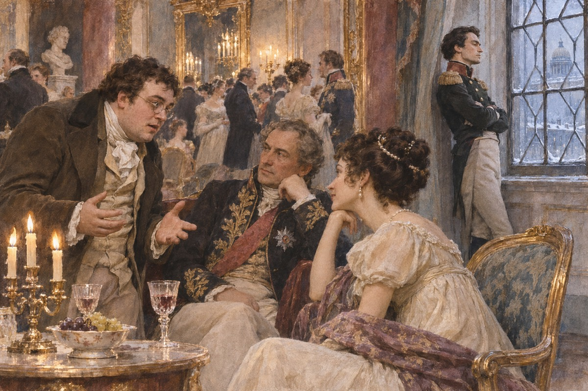
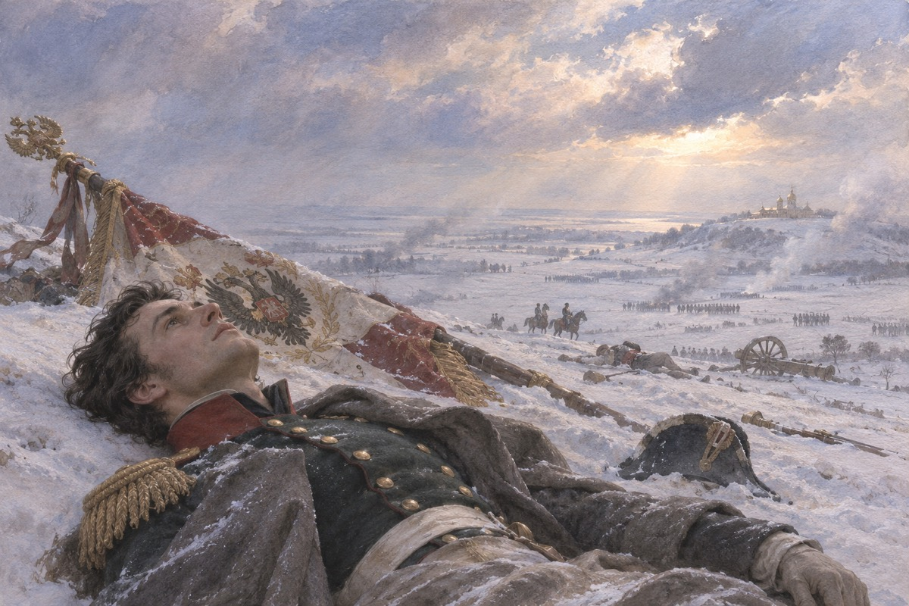
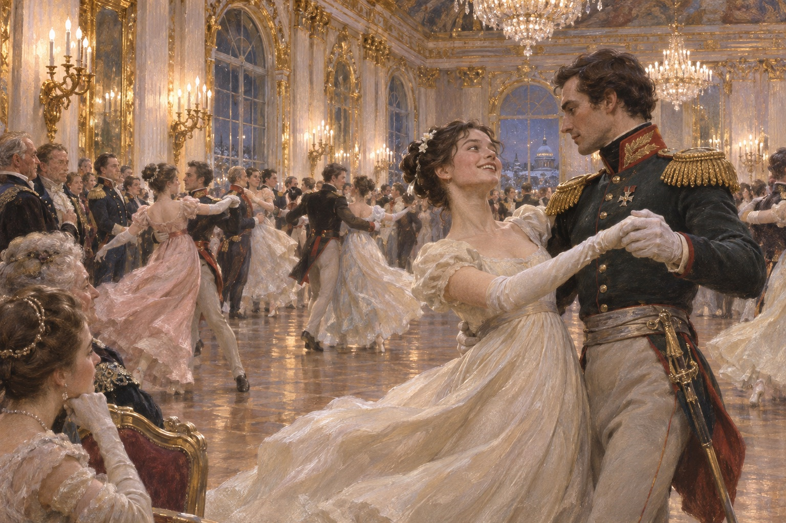
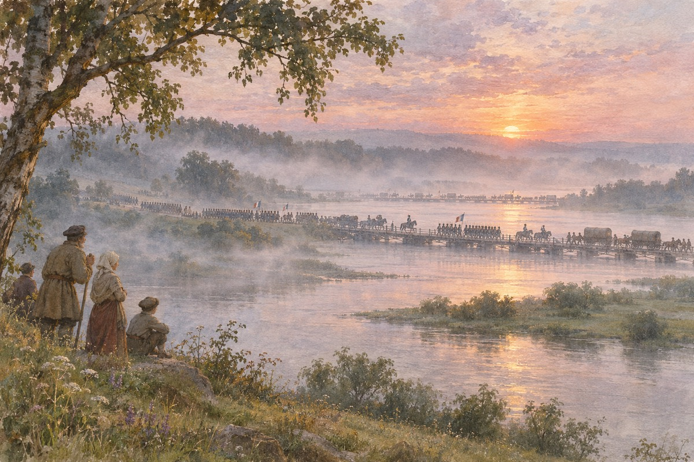
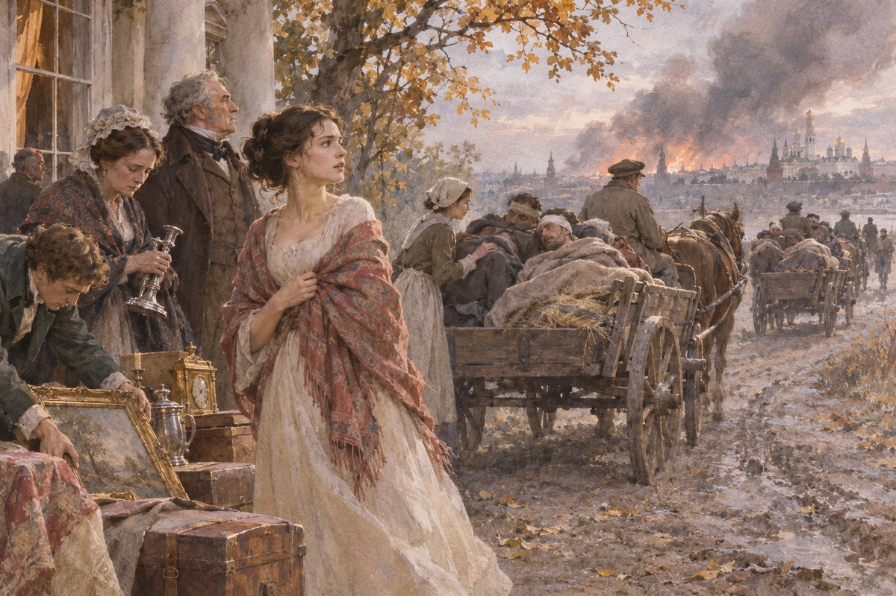
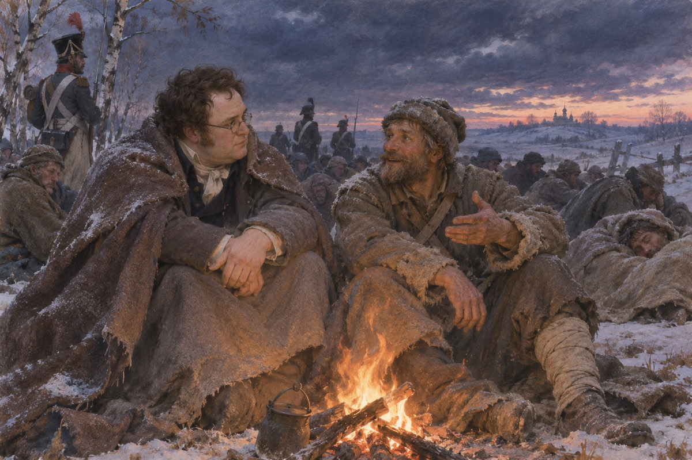
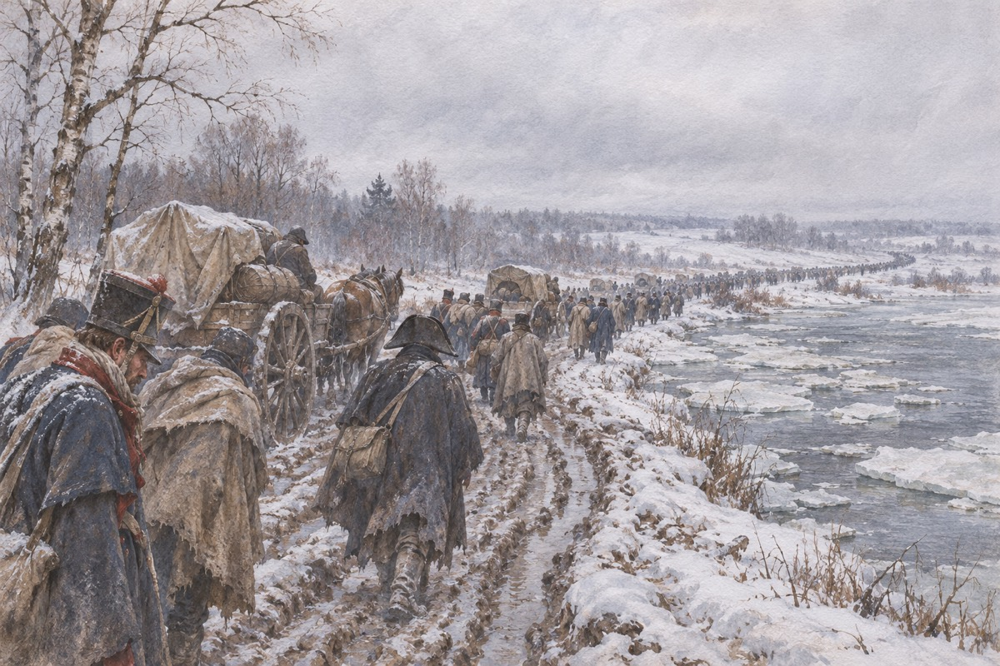
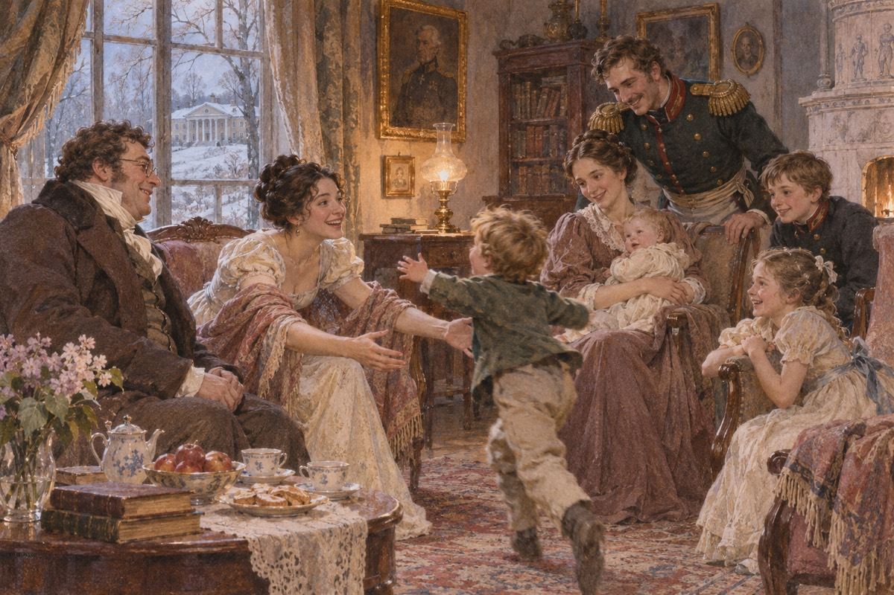

一个私生子
安娜·帕夫洛夫娜的沙龙里，所有人都在谈论拿破仑。皮埃尔是个大个子，刚从国外回来，不知道手该往哪儿放。他是别祖霍夫伯爵的私生子，没有头衔，也没有人认真听他说话。安德烈公爵站在窗边，一脸不耐烦。他说：我明天就走，去前线。皮埃尔说：拿破仑是个伟人。安德烈说：他是个匠人，只会做一件事。

老公爵
安德烈把怀孕的妻子送到父亲的庄园，自己上战场。老包尔康斯基公爵是个古怪的老人，每天做木工，按钟点吃饭，把女儿玛丽亚骂得抬不起头。他送儿子到门口，说：你要是死了，我会难过，但我不会哭。安德烈说：我知道。老公爵说：你要去，就去。他说：别学那些年轻人，把战争当成跳舞。安德烈说：我知道。他说：你不知道。老公爵说：你要去就去。别学那些年轻人，把战争当成跳舞。
天空
拿破仑的军队在奥斯特里茨打垮了俄奥联军。安德烈扛着旗子冲上高地，被子弹打中，仰面倒在地上。他看见头顶的天空，很高，很静。他想：我以前怎么没看见这片天。他身边躺着拿破仑，那个人说：这是个光荣的死。安德烈想：他算什么。他倒下以后，听见有人在说话，说的是法语。他想：这不对。他应该听见俄语。他后来被抬走的时候，手里还攥着旗杆。他倒下以后听见有人说法语。他想：这不对。他应该听见俄语。

遗产
老别祖霍夫伯爵死了，留下一大笔财产。瓦西里公爵想把它弄到手，把女儿海伦嫁给皮埃尔。皮埃尔糊里糊涂地结了婚。他后来跟人说：我那时候不知道自己在做什么。他说：我以为我欠了她什么。瓦西里公爵说：你父亲的意思，是让你娶她。皮埃尔说：我没有父亲的意思。他说：你现在有了。
决斗
皮埃尔发现妻子跟多洛霍夫有染，向他挑战。他不会开枪，闭着眼放了一枪，打中了对方。多洛霍夫倒下又站起来，说：这一枪不算。皮埃尔把枪扔在地上，说：我错了。他一个人坐马车回莫斯科，路上想了一夜。他醒来的时候，手上全是血。他问：他死了吗。有人告诉他：没有。他说：那就好。他说完，自己也不明白为什么说这句话。他醒来的时候手上全是血。他问：他死了吗。有人告诉他：没有。
娜塔莎
罗斯托夫家的小女儿娜塔莎十三岁，跑进客厅，抱着一只布娃娃，笑得整屋子人都看她。她姐姐薇拉要出嫁，她哥哥尼古拉要上前线。这家人快没钱了，可他们还是每天唱歌、跳舞、请客。她表妹索尼娅站在旁边，替她理好裙子，说：你别乱跑。她哥哥的战友鲍里斯也在，站在门口笑。娜塔莎说：我也要上前线。她哥哥说：你是女孩。她说：那我当男孩。全家人笑了。她母亲没有笑。
舞会
娜塔莎第一次参加大舞会。她站在那里，没有人请她跳，眼泪快掉下来。安德烈走过去，说：我可以请你跳一支吗。他们跳的时候，他忽然觉得这个姑娘身上有一股活气，是他这些年没有的。他后来去她家提亲，老伯爵夫人说：她太年轻了。安德烈说：我不该来。她说：那你为什么来。他说：因为我想看看你。她说：那你现在看见了。

一年
老包尔康斯基公爵不同意这门婚事，说：让她等一年。安德烈去了国外。娜塔莎在家里等，等得发慌。她去看戏，认识了阿纳托利——一个长得极好看、什么都不想的年轻人。他说：跟我走。她答应了。阿纳托利说：你不爱他。她说：我爱。他说：你要是爱他，就不会跟我说话。她没有反驳。
私奔
私奔前一天，阿纳托利的计划被人发现。皮埃尔把事情压了下来，把阿纳托利赶出莫斯科。他去找娜塔莎，说：你毁了你自己。她说：我知道。他说：你爱他吗。她说：我不知道。他走出门，说：我要是能娶你就好了。皮埃尔说：你需要一个人替你收拾。她说：你会吗。他说：我会。他说完，转身走了。她站在门口，看着他的背影。
入侵
拿破仑带着六十万人渡过涅曼河。俄国军队一路后退，退到斯摩棱斯克，退到博罗季诺。安德烈回到军队，说：我不指望赢，我只想看着他们怎么输。他在前线遇见皮埃尔，皮埃尔穿着白衣服，站在炮火里，像个不懂事的孩子。安德烈说：你看那边。皮埃尔说：看什么。他说：看那些人，他们不知道自己今天会死。他说完，低下头。安德烈说：你看那边。皮埃尔说：看什么。他说：看那些人。

一天
博罗季诺打了一整天，双方死了几万人。皮埃尔在拉耶夫斯基炮台边上站着，看着人一个个倒下，忽然明白了什么。安德烈被炮弹碎片打中腹部，抬到救护站。他躺在手术台上，看见旁边躺着阿纳托利，那个人的腿已经被锯掉了。他忽然哭了。医生给他包扎的时候，他咬着牙不叫。他后来闻见一股味道，是麻醉药。他说：给我多一点。医生说：不够了。医生给他包扎，他咬着牙不叫。他说：给我多一点。医生说：不够了。
空城
库图佐夫决定放弃莫斯科。全城的人往外走，走了几十万。罗斯托夫家把家具扔下，把伤兵抬上车。娜塔莎说服母亲，把最后几辆车让给了伤员。她说：东西可以再买，人不会。莫斯科烧了六天。她把首饰盒拿出来，说：这些能换几辆车。她母亲说：那是你的嫁妆。她说：我用不上了。

俘虏
皮埃尔留在莫斯科，想刺杀拿破仑。他穿着农民的衣服在街上走，救了一个孩子，被法国兵抓住。他站在行刑队面前，看着前面几个人一个个倒下，轮到他时，命令忽然改了。他成了一个俘虏。他站在行刑队前面，数了数人，一共五个。他想：我会是第六个。枪响的时候，他闭上了眼睛。
普拉东
俘虏队里有个农民叫普拉东·卡拉塔耶夫，胖，爱笑，会讲很多故事。他说：人活着不是为了自己，是为了别人。皮埃尔跟他走了几个星期，学会了吃马肉、睡雪地、不求明天。他后来说：那是我这辈子最自由的一段时间。普拉东说：你看那只狗，它不着急。他说：人也不该着急。皮埃尔说：人做不到。他说：那就慢慢学。

安德烈之死
安德烈被运到后方，伤口烂了。娜塔莎听说以后，一个人跑去照顾他。他看见她，说：我比以前更爱你了。她说：你会好的。他说：不会。他在一个夜里死了。她坐在床边，一直坐到天亮，然后回家，再也没有提过他的名字。她说：你原谅我了吗。他说：我早就原谅了。她说：那你为什么不再说一句话。他说：因为我要走了。她说：你原谅我了吗。他说：我早就原谅了。她说：那你为什么不说话。
彼佳
彼佳是罗斯托夫家最小的儿子，十五岁，非要上前线。他在一次夜袭里冲得太前，被一枪打中脑袋。他倒下去的时候，手里还握着枪。多洛霍夫蹲下去看了一眼，说：这孩子完了。他把彼佳抱起来，交给后面的人。罗斯托夫家收到消息的时候，母亲还不相信，说他昨天才来过信。
出处 · 第 4 卷第 3 部
撤退
法军撤退，冻死、淹死、被哥萨克砍死。库图佐夫站在路边，看着那些逃跑的人，说：够了，够了。他手下的人说：我们该追。他说：让他们自己走吧。他后来被骂了一辈子，说他不够狠。他坐在一辆马车上，看着路边冻死的人。他说：这不是战争，这是屠场。他说完，让人把车停下，自己走了下来。他坐在马车上，看着路边冻死的人。他说：这不是战争，这是屠场。

回来
皮埃尔回到莫斯科，人瘦了，也安静了。他去见娜塔莎，她坐在屋子里，脸色很白。他说：我以为你走了。她说：我哪儿也不去。他说：那我们结婚吧。她说：你不必可怜我。他说：我不是可怜你。她说：你瘦了。他说：你也瘦了。她说：我们都老了。他说：还没有。他说完，把手伸过去。
玛丽亚
玛丽亚一直没嫁人，父亲死后，她一个人守着庄园。尼古拉·罗斯托夫来找她，说：我没有钱，还欠着债。她说：我不在乎。他说：你父亲不会同意。她说：他已经死了。他们结婚了，日子过得很紧，也过得很好。尼古拉说：我欠了三万。她说：那就还。他说：我还不清。她说：那就一起还。他低下头，哭了。尼古拉说：我欠了三万。她说：那就还。他说：我还不清。她说：一起还。
结局
皮埃尔和娜塔莎结婚，生了四个孩子。尼古拉和玛丽亚住在童山，管家管得不好，可他很快乐。海伦早几年死了。安德烈的儿子尼古连卡十五岁，有一天晚上，他看着父亲的照片，忽然觉得自己也能做一件大事。尼古连卡在日记里写：我要做一个像父亲那样的人。他写完，把本子藏在枕头下面，吹灭了蜡烛。尼古连卡在日记里写：我要做一个像父亲那样的人。他把本子藏在枕头下。
尾声
七年以后，尼古拉和玛丽亚住在童山，欠的债还没还完，日子过得紧。皮埃尔和娜塔莎来了，带着四个孩子。娜塔莎胖了，说话不再像从前那样快。晚上，尼古连卡——安德烈的儿子——坐在楼上，看着父亲的画像。他想：我也要做一件大事。他不知道那件大事是什么，可他知道自己要去。
出处 · 第一尾声
